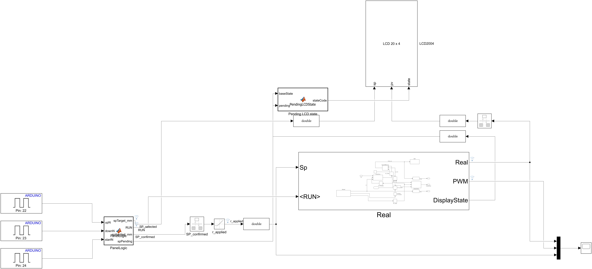
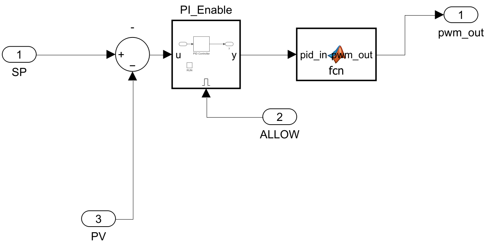
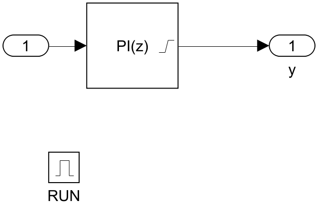
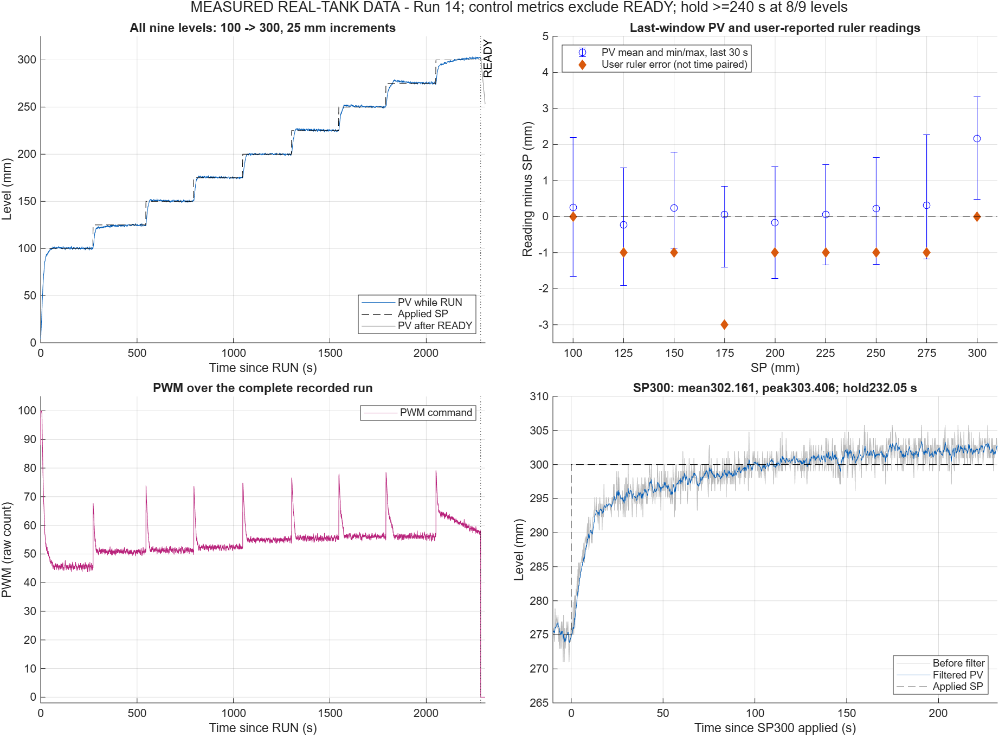
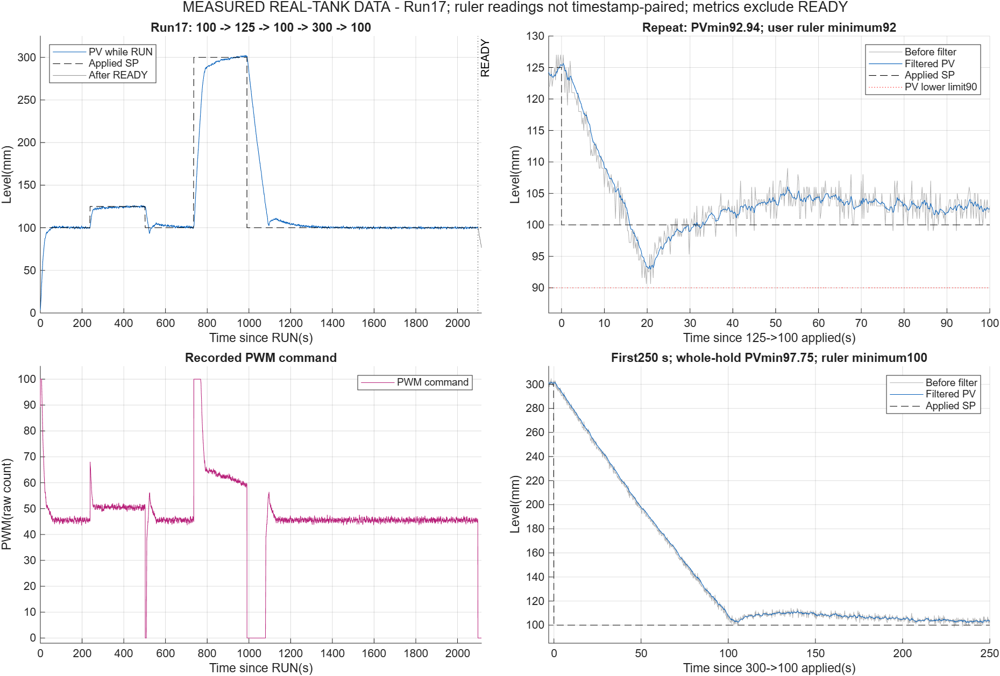

CONTROL SYSTEM · MINI PROJECT
ระบบควบคุมระดับน้ำ
ด้วย PI
Arduino Mega 2560 + MATLAB/Simulink
MILSILPIL · บอร์ด Mega
ทดสอบถังจริงStandalone
รายวิชา Control System Analysis and Design
พัฒนาตาม V-Model · ใช้ภาพและผลจากชุดทดลองจริง
01โจทย์และ Requirement02ฮาร์ดแวร์และชุดทดลอง03แบบจำลองและพารามิเตอร์04ออกแบบและจูน PI05ทดสอบตาม V-Model06สรุปผลและทีม
Members · ผู้นำเสนอ
สมาชิกกลุ่มและส่วนที่รับผิดชอบ
นายนฤพนธ์ บุญมาก
รหัสนักศึกษา 68015089
ซอฟต์แวร์และระบบควบคุม
พัฒนา MATLAB/Simulink ออกแบบและปรับค่าตัวควบคุม PI พัฒนาโปรแกรม Arduino และวิเคราะห์ผลการควบคุม
นายพงศ์พิศาล ชิวสกุล
รหัสนักศึกษา 68015124
ฮาร์ดแวร์และการประกอบระบบ
จัดเตรียมและประกอบชุดถังน้ำ ปั๊มน้ำ เซนเซอร์ และวงจรควบคุม ตรวจสอบการต่อสายและทดสอบอุปกรณ์
น.ส.จุฑามาศ คำรณ
รหัสนักศึกษา 68015028
รายงานและการนำเสนอ
รวบรวมข้อมูลและผลการทดลอง จัดทำรายงาน จัดทำสไลด์ และเรียบเรียงเนื้อหานำเสนอ
สมาชิกทุกคนร่วมวางแผน ทดสอบระบบ วิเคราะห์ปัญหา และเตรียมตอบคำถาม
ระบบควบคุมระดับน้ำด้วย PI
02 / 36
01โจทย์และ Requirement02ฮาร์ดแวร์และชุดทดลอง03แบบจำลองและพารามิเตอร์04ออกแบบและจูน PI05ทดสอบตาม V-Model06สรุปผลและทีม
โจทย์และ Requirement
ช่วง SP 100–300 mm · R1–R8
ฮาร์ดแวร์และชุดทดลอง
ถัง เซนเซอร์ ปั๊ม กล่องควบคุม
แบบจำลองและพารามิเตอร์
LAB1–LAB5 · Co · Ku · Kh · Q0 · lsqnonlin
ออกแบบและจูน PI
SIMC ตั้งต้น → Grid search บนแบบจำลอง
ทดสอบตาม V-Model
MIL → SIL → PIL → ทดสอบถังจริง → Standalone
สรุปผลและทีม
Traceability · ทีมและแผนงาน · วิดีโอ
ภาพรวมแบบจำลอง / ผลจำลองฮาร์ดแวร์และถังจริงจากจำลองสู่ฮาร์ดแวร์
ระบบควบคุมระดับน้ำด้วย PI
03 / 36
01โจทย์และ Requirement02ฮาร์ดแวร์และชุดทดลอง03แบบจำลองและพารามิเตอร์04ออกแบบและจูน PI05ทดสอบตาม V-Model06สรุปผลและทีม
Problem · โจทย์
โจทย์: ควบคุมระดับน้ำ h ให้เท่ากับ SP ในช่วง 100–300 mm
เลือก SP ทีละ 25 mm
กด SP+ / SP− แล้วกด Start เพื่อยืนยัน SP
ปั๊มเติมน้ำได้ทิศทางเดียว
เมื่อ SP ลดลงและ PI ≤ 0 คำสั่ง PWM = 0 → ระดับเริ่มลดลงจากน้ำไหลออกทางท่อ ID 4 mm
เมื่อระดับเข้าใกล้ SP ใหม่ PI กลับมาสั่งปั๊มอีกครั้ง
ประมวลผลบน Arduino Mega
PC เชื่อมต่อผ่าน External Mode เพื่อแสดงผลและบันทึกข้อมูลเท่านั้น
d = ระยะที่เซนเซอร์วัดจากใต้ฝาถึงผิวน้ำ · h = ระดับน้ำจากก้นถัง (ได้จาก d ผ่าน Lookup)
ปั๊มเริ่มทำงาน
ระบบควบคุมระดับน้ำด้วย PI
04 / 36
01โจทย์และ Requirement02ฮาร์ดแวร์และชุดทดลอง03แบบจำลองและพารามิเตอร์04ออกแบบและจูน PI05ทดสอบตาม V-Model06สรุปผลและทีม
Requirements
ข้อกำหนดเชิงตัวเลข R1–R8 และนิยามที่ใช้ตัดสิน
| ID | ข้อกำหนด | เกณฑ์ | วิธีทดสอบ |
|---|
| R1 | ช่วง Setpoint | 100–300 mm ทีละ 25 mm | MIL · ถังจริง |
| R2 | Overshoot / Undershoot | ≤ 10% ของ SP ปลายทาง | MIL · ถังจริง |
| R3 | Settling time (ts) | ในแถบ ±5% | MIL · ถังจริง |
| R4 | Steady-state error (ess) | ≤ 5% ของ SP ปลายทาง | MIL · ถังจริง (สเกล) |
| R5 | ผลของโค้ดตรงกับโมเดล | SIL ≤ 1×10−6 · PIL ≤ 0.5 count | SIL · PIL |
| R6 | Execution time | ControlCore < Sample time 200 ms | PIL |
| R7 | Safety interlock | PWM = 0 เมื่อ Sensor fault หรือระดับก่อน Filter ≥ 310 mm | ถังจริง · Standalone |
| R8 | Standalone | ทำงานได้โดยไม่เชื่อมต่อ PC | Standalone |
นิยามที่ใช้ตัดสิน
- Overshoot Undershoot โดย SP = SP ปลายทาง
- PV = ค่าเซนเซอร์หลัง Filter · ค่าสเกลรายงานแยก
- ts: แถบ ±5% ของ SP ปลายทาง เริ่มนับเมื่อ Apply SP ใหม่
- ess ถังจริง = ค่าที่อ่านจากสเกลช่วงท้ายของแต่ละระดับ − SP (ไม่ได้จับเวลาคู่กับ PV)
ระบบควบคุมระดับน้ำด้วย PI
05 / 36
01โจทย์และ Requirement02ฮาร์ดแวร์และชุดทดลอง03แบบจำลองและพารามิเตอร์04ออกแบบและจูน PI05ทดสอบตาม V-Model06สรุปผลและทีม
V-Model Development Process
V-Model: แต่ละขั้นออกแบบทวนสอบด้วยอะไร
ฟ้า ผลจำลอง / โค้ดบน PC
เส้นคู่ + แถบส้ม บอร์ดจริงแต่ input สังเคราะห์
ส้ม ฮาร์ดแวร์และถังน้ำจริง
→ กดเพื่อเปิดขั้นถัดไป
ระบบควบคุมระดับน้ำด้วย PI
06 / 36
01โจทย์และ Requirement02ฮาร์ดแวร์และชุดทดลอง03แบบจำลองและพารามิเตอร์04ออกแบบและจูน PI05ทดสอบตาม V-Model06สรุปผลและทีม
Hardware Components
ชุดทดลองจริงและอุปกรณ์หลัก
| ส่วนประกอบ | รายละเอียด (ตามต้นฉบับ) |
|---|
| ถังทดสอบ | Acrylic 100×100×500 mm · เซนเซอร์ VL53L0X อยู่ใต้ฝา (ดูหน้า 9) |
| สเกลอ้างอิง | ติดข้างถัง อ่านด้วยสายตา · ใช้รายงาน ess |
| วาล์ว / ทางน้ำออก | ท่อออก ID 4 mm กลับลงถังพัก |
| ถังพัก | 10 L · ปั๊ม AW500S 12 V จุ่มอยู่ภายใน |
| กล่องควบคุม + LCD | Mega 2560 · IRF520 (PWM ขา D5) · LCD2004 I²C · SP+ / SP− / Start |
| แหล่งจ่ายไฟ | 12 V ปั๊ม · DC-DC 7 V → VIN |
10,000 mm²
พื้นที่หน้าตัดถัง A
0 < d ≤ 500 mm
ช่วงตรวจค่าในโปรแกรม (Fault check) — ไม่ใช่สเปกเซนเซอร์
ระบบควบคุมระดับน้ำด้วย PI
07 / 36
01โจทย์และ Requirement02ฮาร์ดแวร์และชุดทดลอง03แบบจำลองและพารามิเตอร์04ออกแบบและจูน PI05ทดสอบตาม V-Model06สรุปผลและทีม
Hardware · กล่องควบคุม
กล่องควบคุม: Microcontroller, Driver, LCD และปุ่มกด
ด้านหน้า: LCD2004 และปุ่มควบคุม SP+ / SP− / Start/Reset
ด้านใน: Arduino Mega 2560, โมดูล DC-DC และไดรเวอร์ IRF520
หลังฝา: LCD พร้อมบอร์ด I²C และสายของปุ่มกด
| ขา | ต่อกับ |
|---|
| D5 | PWM → SIG ของ IRF520 |
| D20 | SDA (บัส I²C) |
| D21 | SCL (บัส I²C) |
| D22 | ปุ่ม SP+ |
| D23 | ปุ่ม SP− |
| D24 | ปุ่ม Start |
| VIN | DC-DC 7 V ผ่าน 1N4007 |
| 5 V | VCC เซนเซอร์ · IRF520 |
| GND | Common ground ทั้งระบบ |
ระบบควบคุมระดับน้ำด้วย PI
08 / 36
01โจทย์และ Requirement02ฮาร์ดแวร์และชุดทดลอง03แบบจำลองและพารามิเตอร์04ออกแบบและจูน PI05ทดสอบตาม V-Model06สรุปผลและทีม
Hardware · วัดและขับ
เซนเซอร์วัดระดับ ปั๊ม และทางน้ำออก
เซนเซอร์ VL53L0X ใต้ฝาถัง: Time-of-Flight วัดระยะ d จากฝาลงผิวน้ำ
ปั๊ม AW500S 12 V DC: อยู่ในถังพัก ส่งน้ำขึ้นถังทดสอบ
วาล์วที่ฐานถัง: น้ำออกผ่านท่อกลับถังพัก
800 L/h
อัตราไหลสูงสุดตามสเปกผู้ผลิต — ไม่ใช่อัตราไหลที่วัดได้ในระบบ
ID 4 mm
เส้นผ่านศูนย์กลางภายในท่อน้ำออก
ระยะ d ≠ ระดับ h — เซนเซอร์วัดระยะ d จากฝาลงผิวน้ำ แล้วแปลงเป็นระดับ hm ด้วย Lookup Table ก่อนเข้า Filter (หน้า 10)
ระบบควบคุมระดับน้ำด้วย PI
09 / 36
01โจทย์และ Requirement02ฮาร์ดแวร์และชุดทดลอง03แบบจำลองและพารามิเตอร์04ออกแบบและจูน PI05ทดสอบตาม V-Model06สรุปผลและทีม
Control Loop
Single-loop feedback: PV ป้อนกลับเข้าจุดรวมก่อน PI
e หน่วย mm · k = ลำดับ Sample · h = ระดับจริง (วัดตรงไม่ได้) · hm = ระดับหลัง Lookup
ระบบควบคุมระดับน้ำด้วย PI
10 / 36
01โจทย์และ Requirement02ฮาร์ดแวร์และชุดทดลอง03แบบจำลองและพารามิเตอร์04ออกแบบและจูน PI05ทดสอบตาม V-Model06สรุปผลและทีม
Simulink Model · Overview
Simulink Model: ภาพรวมระบบที่ใช้จริง
Top-level Model คลิกภาพเพื่อเปิดขนาดเต็ม

1
2
3
4
ภาพส่งออกจาก Simulink Model จริง · การคำนวณควบคุมอยู่บน Arduino Mega
1Digital Input
รับปุ่ม SP+ / SP− / Start
D22 · D23 · D24
2PanelLogic
จัดการ Setpoint และ RUN
เลือกค่า → กด Start ยืนยัน
4LCD2004 / Scope
แสดง SP, PV และสถานะ
ติดตามสัญญาณการทำงาน
ระบบควบคุมระดับน้ำด้วย PI
11 / 36
01โจทย์และ Requirement02ฮาร์ดแวร์และชุดทดลอง03แบบจำลองและพารามิเตอร์04ออกแบบและจูน PI05ทดสอบตาม V-Model06สรุปผลและทีม
Simulink Model · Real / ControlCore
ภายใน ControlCore: Error → PI → PWM
Real / ControlCore คลิกภาพเพื่อเปิดขนาดเต็ม

SP − PV→PI_Enable→MATLAB Function→PWM
ภายใน PI_Enable

Kp 0.90Ki 0.011Ts 0.2 s
Forward Euler · Output 0–61.5 · Clamping
MATLAB Function · PWM mapping
PI output > 0:
PWM = min(PI output + 38.5, 100)
PI output ≤ 0:
PWM = 0
ALLOW ควบคุม PI_Enable · สวิตช์ตัด PWM ตาม Interlock อยู่ใน Real Subsystem ชั้นนอก
ระบบควบคุมระดับน้ำด้วย PI
12 / 36
01โจทย์และ Requirement02ฮาร์ดแวร์และชุดทดลอง03แบบจำลองและพารามิเตอร์04ออกแบบและจูน PI05ทดสอบตาม V-Model06สรุปผลและทีม
Experiment History
การทดลองอ้างอิง LAB1–LAB5: แต่ละครั้งใช้ทำอะไร
LAB1Step
PI: ไม่ระบุในต้นฉบับ
วงปิดครั้งแรก · ระดับสูงสุด ≈ 330 mm
ใช้เป็น: Cross-validation ของแบบจำลองเท่านั้น · RMSE 11.04 mm
LAB2Step
PI 1.24 / 0.0207
SP 0→200→150→125→200 mm
1,802 samples (Ts 0.2 s)
ใช้เป็น: ข้อมูล Fit พารามิเตอร์ Plant (lsqnonlin)
LAB3Step
PI 1.24 / 0.0207
Peak 210.659 mm (125→200)
ต่ำสุด 119.167 mm (150→125)
ใช้เป็น: โจทย์ลด Overshoot · Real–Sim RMSE 2.530 mm
LAB4Step
PI 0.90 / 0.011
Peak 200.894 mm
ts ช่วงเติมครั้งแรก 182.0 s
ใช้เป็น: ทวนสอบผล Grid search · Real–Sim RMSE 2.175 mm
LAB5Ramp ขาลง
PI 0.90 / 0.011
จำกัดการลด SP −0.5 mm/s
ต่ำสุด 147.184 mm (SP 150) · 124.376 mm (SP 125)
ใช้เป็น: ทดสอบรูปแบบ SP ขาลง · Real–Sim RMSE 1.868 mm
ระบบควบคุมระดับน้ำด้วย PI
13 / 36
01โจทย์และ Requirement02ฮาร์ดแวร์และชุดทดลอง03แบบจำลองและพารามิเตอร์04ออกแบบและจูน PI05ทดสอบตาม V-Model06สรุปผลและทีม
Plant Model · สมการ
สมการพลศาสตร์ของถังน้ำ พารามิเตอร์ และหน่วย
Mass balance · ปริมาตรสะสม = ปริมาตรเข้า − ปริมาตรออก
Motor lag ในโดเมน s (เทียบเท่าบรรทัดสุดท้าย)
mm ·
mm³/s ·
PWM count ·
s · Steady state เมื่อ
| ค่า | ความหมาย | หน่วย | ที่มา |
|---|
| A | พื้นที่หน้าตัดถัง | mm² | วัดภายใน 100×100 mm → 10,000 |
| Co | สัมประสิทธิ์การระบาย | mm5/2/s | Drain test → Fit |
| Ku | อัตราไหลต่อ PWM count | mm³/(s·count) | Fill test → Fit |
| Kh | ผลของระดับต่อ Qin | mm²/s | Steady state → Fit |
| Q0 | Flow offset | mm³/s | Fit |
| τm | Motor time constant | s | สมมติฐาน 1.25 s (ตรึงค่า) |
| Ts, Filter | Sample time · 0.2/0.8 | s · – | ค่าตั้งของระบบ |
ระบบควบคุมระดับน้ำด้วย PI
14 / 36
01โจทย์และ Requirement02ฮาร์ดแวร์และชุดทดลอง03แบบจำลองและพารามิเตอร์04ออกแบบและจูน PI05ทดสอบตาม V-Model06สรุปผลและทีม
Parameter · Co
ค่าประมาณแรกของ Co จาก Drain test
200 → 100
ระดับ h1 → h2 (mm)
เมื่อ
แล้ว Integrate จาก
ถึง
ผลที่ได้ (ค่าประมาณแรก)
Co ≈ 1,183.47
mm5/2/s
Co ที่ปรากฏในงานนี้ (คนละรุ่น)
| 1,183.47 | Drain test (หน้านี้) · ใช้หา Ku หน้า 16 |
| 1,052.77 | Initial estimate ที่ใช้หา Kh และ SIMC |
| 1,348.08 | หลัง Fit ด้วย LAB2 (หน้า 20) |
ระบบควบคุมระดับน้ำด้วย PI
15 / 36
01โจทย์และ Requirement02ฮาร์ดแวร์และชุดทดลอง03แบบจำลองและพารามิเตอร์04ออกแบบและจูน PI05ทดสอบตาม V-Model06สรุปผลและทีม
Parameter · Ku
ค่าประมาณแรกของ Ku จาก Fill test
100 count
PWM คงที่ (ไม่ใช่ 100% duty)
ประมาณ
จากระดับเฉลี่ย
และ
ผลที่ได้ (ค่าประมาณแรก)
Ku ≈ 611.04
mm³/(s·count)
Ku ที่ปรากฏในงานนี้ (คนละรุ่น)
| 611.04 | Fill test (หน้านี้) |
| 549.06 | ใช้หา Kh (หน้า 17) |
| 536.36 | Initial estimate ใน SIMC/ตาราง Fit |
| 941.22 | หลัง Fit LAB2 (มี Kh, Q0) |
ระบบควบคุมระดับน้ำด้วย PI
16 / 36
01โจทย์และ Requirement02ฮาร์ดแวร์และชุดทดลอง03แบบจำลองและพารามิเตอร์04ออกแบบและจูน PI05ทดสอบตาม V-Model06สรุปผลและทีม
Parameter · Kh
ค่าประมาณแรกของ Kh จากจุดสมดุล (สมมติ Q0 = 0)
ที่ Steady state:
และสมมติ
ในขั้นนี้
ค่าที่ใช้แทน: Ku = 549.06 และ Co = 1,052.77 ซึ่งต้นฉบับระบุว่าเป็น Initial estimate จากการทดลองต่างช่วง — ไม่ใช่ 611.04 / 1,183.47 ของหน้า 15–16
ผลที่ได้ (ค่าประมาณแรก)
Kh ≈ 76.55
mm²/s
ความหมาย
ระดับน้ำเพิ่ม 1 mm → อัตราไหลของปั๊มลดลง Kh mm³/s
ค่าในแบบจำลองปัจจุบัน Kh = 18.935 mm²/s ได้จากการ Fit ร่วม (หน้า 19–20)
ระบบควบคุมระดับน้ำด้วย PI
17 / 36
01โจทย์และ Requirement02ฮาร์ดแวร์และชุดทดลอง03แบบจำลองและพารามิเตอร์04ออกแบบและจูน PI05ทดสอบตาม V-Model06สรุปผลและทีม
PI Design · ตั้งต้น
PI ตั้งต้นด้วยกฎ SIMC บนแบบจำลองลดรูป
1 · แบบจำลองลดรูปรอบ h0 = 200 mm
ใช้
2 · กฎ SIMC (θ = 0, τc = λ = 15 s)
ค่าที่ใช้ทดลอง LAB2–LAB3
สมมติฐาน / พจน์ที่ละไว้
- ละ : ในสมการเต็มช่วง ผลของระดับมีทั้ง และ — แบบจำลองตั้งต้นใช้เฉพาะพจน์หลัง
- ละ Q0, Motor lag τm และ Filter ของ PV
- Dead time θ = 0
- ไม่รวม Saturation และปั๊มทางเดียว
อ้างอิง: Skogestad (2003) SIMC tuning rules
ระบบควบคุมระดับน้ำด้วย PI
18 / 36
01โจทย์และ Requirement02ฮาร์ดแวร์และชุดทดลอง03แบบจำลองและพารามิเตอร์04ออกแบบและจูน PI05ทดสอบตาม V-Model06สรุปผลและทีม
Model Fitting
ประมาณพารามิเตอร์ร่วมด้วย lsqnonlin บนข้อมูล LAB2
18.09 mm
RMSE ของแบบจำลองตั้งต้นเมื่อป้อน PWM ที่วัดได้ → จึงต้อง Fit ใหม่
วิธี: Nonlinear grey-box output-error least squares
ตรึงค่า: A = 10,000 mm² · τm = 1.25 s · τs = 3.9 s
ค้นหา: 5 โครงสร้างแบบจำลอง × 3 Initial guess · มี Parameter bounds
hinit = ระดับเริ่มต้นของข้อมูล (คนละตัวกับ h0 = 200 mm ของ SIMC)
τs กับ Filter 0.2/0.8 ต่างกัน: τs เป็นพารามิเตอร์ที่ตรึงในแบบจำลองที่ใช้ Fit · Filter 0.2/0.8 คือ Filter แบบ Discrete บน Arduino ที่สร้าง PV (≈ ค่าคงตัวเวลา 0.9 s ที่ Ts 0.2 s)
ระบบควบคุมระดับน้ำด้วย PI
19 / 36
01โจทย์และ Requirement02ฮาร์ดแวร์และชุดทดลอง03แบบจำลองและพารามิเตอร์04ออกแบบและจูน PI05ทดสอบตาม V-Model06สรุปผลและทีม
Model Fitting · ผล
ผลก่อน–หลังปรับแบบจำลอง: แยกการประเมิน 3 แบบ
 LAB2 · Closed-loop comparison ด้วย PI 1.24/0.0207 · แกนเวลานับจาก Sample แรกที่บันทึก · Fit เริ่มที่ 20 s · ภาพต้นฉบับ: ระดับจริง = ส้ม, แบบจำลองเดิม = เทา, แบบจำลองใหม่ = น้ำเงิน
LAB2 · Closed-loop comparison ด้วย PI 1.24/0.0207 · แกนเวลานับจาก Sample แรกที่บันทึก · Fit เริ่มที่ 20 s · ภาพต้นฉบับ: ระดับจริง = ส้ม, แบบจำลองเดิม = เทา, แบบจำลองใหม่ = น้ำเงิน
| ค่า | Initial | หลัง Fit | หน่วย |
|---|
| Ku | 536.36 | 941.22 | mm³/(s·count) |
| Kh | 76.55 | 18.935 | mm²/s |
| Co | 1,052.77 | 1,348.08 | mm5/2/s |
| Q0 | — | 28,265.07 | mm³/s |
① Open-loop replay (ป้อน PWM ที่วัดได้)
② Closed-loop comparison (โมเดลคำนวณ PWM เอง)
③ Cross-validation กับ LAB1
ระบบควบคุมระดับน้ำด้วย PI
20 / 36
01โจทย์และ Requirement02ฮาร์ดแวร์และชุดทดลอง03แบบจำลองและพารามิเตอร์04ออกแบบและจูน PI05ทดสอบตาม V-Model06สรุปผลและทีม
PI Tuning
ปรับจูน PI ด้วย Grid search บนแบบจำลอง แล้วทดลองจริง
ค่าที่ใช้บนบอร์ด
เลือกจาก Grid search บนแบบจำลองที่ Fit แล้ว · Ts 0.2 s · Forward Euler
Error เป็น mm และเอาต์พุตเป็น PWM count
ค้นหาใน Simulation
ผลจำลอง
- Coarse grid 570 ชุด → Fine grid 875 คู่ (Python/NumPy บนแบบจำลองที่ Fit แล้ว)
- เกณฑ์ค้นหา: Overshoot ≤ 2 mm · ts ≤ 180 s · Tail MAE ≤ 1 mm
- Cost
- Sensitivity เพิ่มเติม 9 กรณี
เกณฑ์ค้นหานี้ใช้คัดเลือกใน Simulation — ไม่ใช่ เกณฑ์ตัดสิน R2–R4
ผลจริง LAB3 → LAB4
ถังจริง
| ตัวชี้วัด | LAB3
1.24/0.0207 | LAB4
0.90/0.011 |
|---|
| Peak ช่วงเข้า SP 200 | 210.659 mm | 200.894 mm |
| ts ช่วงเติมครั้งแรก | 56.6 s | 182.0 s |
Trade-off ที่สังเกตได้: Peak ลดลง แต่ ts ช่วงเติมครั้งแรกนานขึ้น
คนละ Run และคนละลำดับ SP — ไม่ใช่คู่ทดสอบเดียวกัน
ขีดจำกัดเอาต์พุตบนฮาร์ดแวร์
| PI out | 0–61.5 · clamping |
| PWM | PI > 0: PI + 38.5 (≤ 100) |
| PI ≤ 0: 0 → ปั๊มหยุดสั่ง |
61.5 + 38.5 = 100 count → Anti-windup ใช้ขีดจำกัดเดียวกับ Actuator
ระบบควบคุมระดับน้ำด้วย PI
21 / 36
01โจทย์และ Requirement02ฮาร์ดแวร์และชุดทดลอง03แบบจำลองและพารามิเตอร์04ออกแบบและจูน PI05ทดสอบตาม V-Model06สรุปผลและทีม
MIL · Model-in-the-Loop
MIL: ผ่านเกณฑ์ครบ 18/18 กรณี
ผลจำลอง

ts = 181.2 s (t ≈ 481 s)
MIL กรณี 300→100 mm หลังเปลี่ยน SP · แกน x = Simulation time (s), SP เปลี่ยนที่ 300 s · เส้นจุด = แถบ ±5% · เส้นประส้ม = จุด Settling ที่คำนวณจาก ts ที่รายงาน
· SP Applied SP Plant (ก่อน Filter) PV (หลัง Filter)
0.48%
Overshoot สูงสุด (100→125)
181.2 s
ts สูงสุด (300→100)
0.38 mm
ess สูงสุด (100→300)
Step ขึ้น 8 กรณี: ts ≤ 15.2 s · Step ลง 8 กรณี: ts ≤ 15.6 s · เต็มช่วง: 100→300 ts 54.0 s
รุ่นโมเดล: Plant จาก Fit LAB2 · PI 0.90/0.011 เดียวกับบนบอร์ด · SP ขาลงแบบ Step · Filter 0.2/0.8 ตรงกับฮาร์ดแวร์เวอร์ชัน 1.48 · รันใหม่ 30 ต.ค.
ระบบควบคุมระดับน้ำด้วย PI
22 / 36
01โจทย์และ Requirement02ฮาร์ดแวร์และชุดทดลอง03แบบจำลองและพารามิเตอร์04ออกแบบและจูน PI05ทดสอบตาม V-Model06สรุปผลและทีม
SIL · Software-in-the-Loop
SIL: ผลตรงกันทุก Sample ในชุดทดสอบ
ผลจำลอง · โค้ดบน PC
 กรณี SIL-C1 · Normal (โมเดล) เทียบ SIL (โค้ด C บน PC) · แกนเวลานับจากเริ่ม Simulation · แผงล่าง = ผลต่าง (หน่วย ×10−6)
กรณี SIL-C1 · Normal (โมเดล) เทียบ SIL (โค้ด C บน PC) · แกนเวลานับจากเริ่ม Simulation · แผงล่าง = ผลต่าง (หน่วย ×10−6)
0
Max|Δ| และ RMSE ทุกคู่สัญญาณ (tolerance 1×10−6)
31,463
samples ที่เปรียบเทียบ · 6 sessions · 13 คู่สัญญาณ
Generate C code (ert.tlc) → รันบน PC
Back-to-back: PWM, PV, SP, ALLOW
รหัสกรณี: SIL-R1…R3, SIL-C1…C3 — ไม่ใช่ Requirement R1–R8
ระบบควบคุมระดับน้ำด้วย PI
23 / 36
01โจทย์และ Requirement02ฮาร์ดแวร์และชุดทดลอง03แบบจำลองและพารามิเตอร์04ออกแบบและจูน PI05ทดสอบตาม V-Model06สรุปผลและทีม
PIL · Processor-in-the-Loop
PIL: ControlCore บน Mega ใช้เวลาสูงสุดที่วัดได้ 124 µs
รันบน Mega / Synthetic input
| กรณี | รายการทดสอบ | N | Max|ΔPWM|
(count) | Exec. time
สูงสุด |
|---|
| PIL-R1 | Error เป็นศูนย์ บวก และลบ | 451 | 3.66×10−6 | 124 µs |
| PIL-R2 | PWM saturation และ recovery | 601 | 0 | 112 µs |
| PIL-R3 | Stop/restart ด้วย ALLOW | 401 | 2.38×10−5 | 124 µs |
| รวม | 1,453 | | |
0.062%
= 124 µs ÷ Sample period 200 ms
ไม่ใช่ CPU utilization ของ Firmware ทั้งระบบ และไม่ใช่ WCET ที่พิสูจน์แล้ว
≤ 0.5 count
Tolerance = ครึ่งหนึ่งของ PWM resolution
PIL-R1…R3 = รหัสกรณีทดสอบ ไม่ใช่ Requirement R1–R3 · double บน ATmega2560 มีขนาด 32 บิตเท่ากับ float
 PIL-R3 · บน: ผลต่าง PIL − MIL (×10−5 count) เทียบ Simulation time (s) · ล่าง: Execution time ต่อ Step (µs) · แสดงสองแผงล่างของภาพผลทดสอบ
PIL-R3 · บน: ผลต่าง PIL − MIL (×10−5 count) เทียบ Simulation time (s) · ล่าง: Execution time ต่อ Step (µs) · แสดงสองแผงล่างของภาพผลทดสอบ
ระบบควบคุมระดับน้ำด้วย PI
24 / 36
01โจทย์และ Requirement02ฮาร์ดแวร์และชุดทดลอง03แบบจำลองและพารามิเตอร์04ออกแบบและจูน PI05ทดสอบตาม V-Model06สรุปผลและทีม
ทดสอบถังจริง
ถังจริง: Overshoot/Undershoot ≤ 10% ใน 18 การเปลี่ยน SP
ทดสอบกับถังน้ำจริง

Run14 · ขาขึ้น 100→300 mm ทีละ 25 mm · แกน x = เวลานับจากเริ่ม RUN (s)
 Run16 · ขาลง 300→100 mm ทีละ 25 mm · แกน x = เวลานับจากเริ่ม RUN (s)
Run16 · ขาลง 300→100 mm ทีละ 25 mm · แกน x = เวลานับจากเริ่ม RUN (s)
9.65%
Undershoot สูงสุด · PV (125→100, Run16) · สเกล 90 mm → 10%
3 mm
ess สูงสุดจากสเกล (SP 175, 1.71%) · สเกลไม่ได้ sync กับ PV
ระบบควบคุมระดับน้ำด้วย PI
25 / 36
01โจทย์และ Requirement02ฮาร์ดแวร์และชุดทดลอง03แบบจำลองและพารามิเตอร์04ออกแบบและจูน PI05ทดสอบตาม V-Model06สรุปผลและทีม
ทดสอบถังจริง · Edge cases
กรณีใกล้ขีดจำกัด: Step ลง 125→100 mm
ทดสอบกับถังน้ำจริง
ครั้งที่ 1 (Run16) · เวลานับจาก Apply SP 100

ทดสอบซ้ำ (Run17) · เวลานับจาก Apply SP 100
| 125→100 | PV ต่ำสุด (หลัง Filter) | Undershoot จาก PV | สเกลต่ำสุด (ไม่ sync กับ PV) | Undershoot จากสเกล |
|---|
| ครั้งที่ 1 (Run16) | 90.35 mm | 9.65% | 90 mm | 10% |
| ทดสอบซ้ำ (Run17) | 92.94 mm | 7.06% | 92 mm | 8% |
ระบบควบคุมระดับน้ำด้วย PI
26 / 36
01โจทย์และ Requirement02ฮาร์ดแวร์และชุดทดลอง03แบบจำลองและพารามิเตอร์04ออกแบบและจูน PI05ทดสอบตาม V-Model06สรุปผลและทีม
ทดสอบถังจริง · Edge cases
กรณีใกล้ขีดจำกัด: Step ลง 300→100 mm
ทดสอบกับถังน้ำจริง
300→100 (Run17) · เวลานับจาก Apply SP 100 · 250 s แรกของช่วงคงระดับ
Settling time (แถบ ±5%)
223.6 s
ผ่านเกณฑ์ ≤ 250 s
ระดับลดถึง ≈ 100 mm ใน ≈ 100 s แล้วเข้าแถบอย่างช้า (Ki ต่ำ)
คำสั่ง PWM = 0 ภายใน 1 Sample (0.2 s) หลังยืนยัน SP ที่ต่ำกว่า — เป็นหลักฐานของคำสั่ง ไม่ใช่ การยืนยันว่าปั๊ม/การไหลหยุดทางกายภาพภายใน 0.2 s
ระบบควบคุมระดับน้ำด้วย PI
27 / 36
01โจทย์และ Requirement02ฮาร์ดแวร์และชุดทดลอง03แบบจำลองและพารามิเตอร์04ออกแบบและจูน PI05ทดสอบตาม V-Model06สรุปผลและทีม
MIL vs ถังจริง
ถังจริงเกิด Undershoot ที่ 100 mm แต่แบบจำลองไม่เกิด
| ตัวชี้วัด | MIL (จำลอง) | ถังจริง | แหล่งวัด / เงื่อนไข | เกณฑ์ |
|---|
| 125→100 Undershoot | 0% | 9.65% (Run16) · ซ้ำ 7.06% (Run17) | PV หลัง Filter · สเกล: 10% / 8% | ≤ 10% |
| 300→100 Settling time | 181.2 s | 223.6 s (Run17) | PV · แถบ ±5% · นับจาก Apply SP | ≤ 250 s |
| Step ขึ้น 25 mm: Overshoot สูงสุด | 0.48% | 1.72% | PV หลัง Filter | ≤ 10% |
| Steady-state error สูงสุด | 0.38 mm | 3 mm (สเกล) | MIL: PV จำลอง · ถังจริง: สเกล — ต่างแหล่งวัด | ≤ 5% |
ข้อสรุปที่รองรับด้วยหลักฐาน
ทั้งสองชุดผ่านเกณฑ์ · ใช้ผลถังจริงในการตัดสิน
สาเหตุที่เป็นไปได้ (สมมติฐาน ยังไม่ได้ทดสอบ)
แบบจำลอง Fit ในช่วง 125–200 mm ไม่ครอบคลุม 100 mm และไม่ได้รวม Disturbance/Noise จากผิวน้ำ
ระบบควบคุมระดับน้ำด้วย PI
28 / 36
01โจทย์และ Requirement02ฮาร์ดแวร์และชุดทดลอง03แบบจำลองและพารามิเตอร์04ออกแบบและจูน PI05ทดสอบตาม V-Model06สรุปผลและทีม
ขอบเขต PIL · ระบบจริง
ขอบเขตของ PIL และปัจจัยเพิ่มในระบบจริง 4 ด้าน
PIL: ControlCore บน Mega ด้วย Synthetic input → ผลต่าง PWM ≤ 2.38×10−5 count · ไม่มีเซนเซอร์ ปั๊ม และผิวน้ำในวง · ไม่เทียบ ΔPWM (count) กับความคลาดเคลื่อนระดับ (mm) โดยตรง
Resolution
ระยะจากเซนเซอร์ละเอียด 1 mm
PWM ปัดเป็นจำนวนเต็ม 1 count
ต้นฉบับระบุ 1 count ≈ 0.392% duty (= 1/255)
Accuracy
PV เป็นค่าเซนเซอร์หลัง Filter ไม่ใช่การวัดอิสระ
สเกลอ่านด้วยสายตา ไม่ synchronize กับ PV
ยังไม่มีการวัดอ้างอิงที่จับเวลาคู่กัน
Noise
SD ก่อน Filter 1.47–1.85 mm
SD หลัง Filter 0.38–0.81 mm
PV peak-to-peak ≈ 2.6–3.9 mm
150 จุดท้ายของ 18 ช่วง (Run14/16) · รวมความแปรปรวนผิวน้ำ ไม่ใช่ Sensor noise ล้วน
Delay
Ts 0.2 s
Filter group delay ≈ 0.8 s (95% ใน ≈ 2.8 s)
→ PV ตอบสนองช้ากว่าระดับจริง
PIL วัดเฉพาะเวลาคำนวณ 124 µs
ระบบควบคุมระดับน้ำด้วย PI
29 / 36
01โจทย์และ Requirement02ฮาร์ดแวร์และชุดทดลอง03แบบจำลองและพารามิเตอร์04ออกแบบและจูน PI05ทดสอบตาม V-Model06สรุปผลและทีม
Standalone · Safety interlock
LCD, Safety interlock และ Standalone: หลักฐาน
ฮาร์ดแวร์จริง
READY · SP 100 / PV 1.1 mm
RUN · SP 175 / PV 175.4 mm
SENSOR FAULT · PV −86.9 mm
| สถานะ | เงื่อนไข (ในโมเดล) | PWM command |
|---|
| SENSOR FAULT | ระยะไม่อยู่ในช่วง 0 < d ≤ 500 mm | 0 · กลับสู่การควบคุมเมื่อค่าปกติ |
| HIGH LEVEL | ระดับก่อน Filter (hm) ≥ 310 mm | 0 · กลับเมื่อ < 310 mm |
R7 · Safety interlock
- LCD แสดง Fault: ภาพ SENSOR FAULT / HIGH LEVEL (Fault สร้างโดยยก/เอียงฝาเซนเซอร์) · วิดีโอช่วง ≈ 7:15 จอแสดง HIGH LEVEL เมื่อระดับเกิน 310 mm
- PWM = 0: Logic ALLOW ในโมเดล · PIL-R3 บน Mega: ALLOW = 0 → PWM = 0
R8 · Standalone
- วิดีโอช่วง ≈ 3:00: สาธิตแบบไม่เชื่อมต่อคอมพิวเตอร์ ใช้แหล่งจ่ายไฟอย่างเดียว
- PDF: LCD และระดับน้ำขณะ READY/RUN ทุก SP (หน้าถัดไป)
ระบบควบคุมระดับน้ำด้วย PI
30 / 36
01โจทย์และ Requirement02ฮาร์ดแวร์และชุดทดลอง03แบบจำลองและพารามิเตอร์04ออกแบบและจูน PI05ทดสอบตาม V-Model06สรุปผลและทีม
Standalone · ข้อมูลประกอบ
ข้อมูลประกอบ Standalone: เปรียบเทียบ PV กับสเกลจริง
ฮาร์ดแวร์จริง
| สถานะ | SP | PV บนจอ | สเกลจริง ≈ | PV − สเกล | สเกล − SP |
|---|
| ก่อนเริ่มควบคุม (ไม่ใช่ผลการควบคุม) |
| READY | 100 | 1.1 | ≈ 0 | — | — |
| ขณะควบคุม (RUN) · ภาพนิ่งทีละระดับ · หน่วย mm |
| RUN | 100 | 101.3 | ≈ 102 | ≈ −0.7 | ≈ +2 |
| RUN | 125 | 127.8 | ≈ 130 | ≈ −2.2 | ≈ +5 |
| RUN | 150 | 149.3 | ≈ 151 | ≈ −1.7 | ≈ +1 |
| RUN | 175 | 175.4 | ≈ 175 | ≈ +0.4 | ≈ 0 |
| RUN | 200 | 202.0 | ≈ 200 | ≈ +2.0 | ≈ 0 |
| RUN | 225 | 225.1 | ≈ 226 | ≈ −0.9 | ≈ +1 |
| RUN | 250 | 251.5 | ≈ 251 | ≈ +0.5 | ≈ +1 |
| RUN | 275 | 277.3 | ≈ 276 | ≈ +1.3 | ≈ +1 |
| RUN | 300 | 304.5 | ≈ 300 | ≈ +4.5 | ≈ 0 |
ค่าสเกลจริงอ่านจากขอบบนของแผ่นลูกลอยเทียบไม้บรรทัดข้างถัง มีความคลาดเคลื่อนในการอ่านประมาณ ±3 mm · PV − สเกล = ความแม่นของการวัด · สเกล − SP = ผลการควบคุม ณ ขณะถ่ายภาพ · ภาพนิ่ง ไม่ใช้สรุป Settling time หรือ Overshoot
ระบบควบคุมระดับน้ำด้วย PI
31 / 36
01โจทย์และ Requirement02ฮาร์ดแวร์และชุดทดลอง03แบบจำลองและพารามิเตอร์04ออกแบบและจูน PI05ทดสอบตาม V-Model06สรุปผลและทีม
Traceability
Requirement → Test → ผล
| ID | เกณฑ์ | จำลอง (MIL/SIL/PIL) | ถังจริง | ผล |
|---|
| R1 | 100–300 mm ทีละ 25 | MIL 18 กรณี | 18 การเปลี่ยน SP (Run14/16) | ผ่าน |
| R2 | Overshoot/Undershoot ≤ 10% | MIL สูงสุด 0.48% | Undershoot PV 9.65% · สเกล 10% (ซ้ำ 7.06% / 8%) | ผ่าน ใกล้ขีดจำกัด |
| R3 | ts ≤ 250 s (±5%) | MIL 181.2 s | 223.6 s (300→100) | ผ่าน |
| R4 | ess ≤ 5% | MIL 0.38 mm | สเกล 3 mm (1.71%) | ผ่าน |
| R5 | โค้ดตรงกับโมเดล | SIL 0 · PIL 2.38×10−5 count | – | ผ่าน PIL tol. ≤ 0.5 count |
| R6 | ControlCore < Ts | PIL 124 µs (สูงสุดที่วัดได้) | – | ผ่านในกรณีที่ทดสอบ ไม่ใช่ WCET |
| R7 | PWM = 0 เมื่อ Fault | Logic ALLOW · PIL-R3: ALLOW = 0 → PWM = 0 | LCD แสดง SENSOR FAULT / HIGH LEVEL · วิดีโอ HIGH LEVEL | ผ่าน |
| R8 | ไม่เชื่อมต่อ PC | – | วิดีโอ Standalone (ใช้แหล่งจ่ายไฟ ไม่ต่อ PC) · PDF | ผ่าน |
ระบบควบคุมระดับน้ำด้วย PI
32 / 36
01โจทย์และ Requirement02ฮาร์ดแวร์และชุดทดลอง03แบบจำลองและพารามิเตอร์04ออกแบบและจูน PI05ทดสอบตาม V-Model06สรุปผลและทีม
Requirement ที่ผ่าน
8/ 8
R7 · R8 อ้างอิงหลักฐาน Interlock และ Standalone (หน้า 30–31)
R2 · ถังจริง
9.65%
Overshoot/Undershoot สูงสุด
PV, 125→100 · สเกล 10% · เกณฑ์ ≤ 10%
R3 · ถังจริง
223.6 s
Settling time สูงสุด
300→100 · ผ่านเกณฑ์ ≤ 250 s
R4 · ถังจริง
3 mm
Steady-state error สูงสุด
สเกล · 1.71% · เกณฑ์ ≤ 5%
R6 · PIL
124 µs
ControlCore สูงสุดที่วัดได้
< Ts 200 ms · ไม่ใช่ WCET
ระบบควบคุมระดับน้ำด้วย PI
33 / 36
01โจทย์และ Requirement02ฮาร์ดแวร์และชุดทดลอง03แบบจำลองและพารามิเตอร์04ออกแบบและจูน PI05ทดสอบตาม V-Model06สรุปผลและทีม
Team & Timeline
ทีมและแผนงาน
แผนดำเนินงานเบื้องต้น
งาน
สัปดาห์ 1
สัปดาห์ 2
สัปดาห์ 3
สัปดาห์ 4
ศึกษาข้อมูลและวางแผนร่วมกันสัปดาห์ 1
พัฒนาแบบจำลองและโปรแกรมควบคุมสัปดาห์ 1–2
ประกอบและตรวจสอบฮาร์ดแวร์สัปดาห์ 1–2
เชื่อมต่อระบบและทดสอบร่วมกันสัปดาห์ 3
รวบรวมผลและจัดทำรายงานสัปดาห์ 2–4
จัดทำสไลด์และซ้อมนำเสนอสัปดาห์ 4
แผนเบื้องต้น ไม่ใช่บันทึกวันทำงานจริง
การจัดเก็บไฟล์และเวอร์ชัน
- ชุดส่งมอบ
- WaterLevel_Project_2026-10-31_v1.0.zip
- วันที่จัดชุด
- 31 ตุลาคม 2026
- เวอร์ชันชุดไฟล์
- v1.0
- แบ่งเป็น
- โปรแกรม / ฮาร์ดแวร์ / ผลการทดลอง
ชื่อชุดไฟล์ระบุวันที่และเวอร์ชัน พร้อมรายการไฟล์ต้นทาง
วันที่จัดชุดไม่ใช่วันที่ทำการทดลอง
- เวอร์ชันสไลด์ออนไลน์
- v1.3 · 3 พฤศจิกายน 2026
- การเผยแพร่
- GitHub Pages (แชร์ลิงก์)
เวอร์ชันสไลด์แยกจากเวอร์ชันชุดไฟล์โครงงาน
ระบบควบคุมระดับน้ำด้วย PI
34 / 36
01โจทย์และ Requirement02ฮาร์ดแวร์และชุดทดลอง03แบบจำลองและพารามิเตอร์04ออกแบบและจูน PI05ทดสอบตาม V-Model06สรุปผลและทีม
Demonstration Video
วิดีโอสาธิตการทำงานจริง
7 นาที 48 วินาที · กด ▶ เพื่อเล่น · วิดีโอหยุดอัตโนมัติเมื่อเปลี่ยนสไลด์
ช่วงสำคัญในวิดีโอ
- แนะนำโครงงาน ชุดทดลอง เซนเซอร์ และปั๊ม
- อธิบายวงควบคุมและบทบาทของ PI
- ≈ 3:00 สาธิต Standalone: ไม่เชื่อมต่อคอมพิวเตอร์ ใช้แหล่งจ่ายไฟอย่างเดียว
- เลือก SP กด Start พร้อมนาฬิกาจับเวลาและจอ LCD
- ≈ 7:15 ระดับเกิน 310 mm → จอแสดง HIGH LEVEL
ระบบควบคุมระดับน้ำด้วย PI
35 / 36
01โจทย์และ Requirement02ฮาร์ดแวร์และชุดทดลอง03แบบจำลองและพารามิเตอร์04ออกแบบและจูน PI05ทดสอบตาม V-Model06สรุปผลและทีม
Summary · Q&A
สรุปผลที่มีหลักฐานรองรับ
จำลอง MIL ผ่าน 18/18 กรณี · SIL ผลตรงกันทุก Sample ในชุดทดสอบ
บอร์ด Mega PIL: |ΔPWM| ≤ 2.38×10−5 count · ControlCore สูงสุดที่วัดได้ 124 µs
ถังจริง R1–R4 ผ่าน · R2 ใกล้ขีดจำกัด (PV 9.65% / สเกล 10%) · R3 Settling time 223.6 s ผ่านเกณฑ์ ≤ 250 s
R1–R8 ผ่าน 8/8 R7 Safety interlock · R8 Standalone มีหลักฐานจาก LCD, PIL-R3, วิดีโอ และ PDF
ขอบคุณครับ
ถาม – ตอบ · Q&A
ระบบควบคุมระดับน้ำด้วย PI · Arduino Mega 2560 + MATLAB/Simulink
ระบบควบคุมระดับน้ำด้วย PI
36 / 36